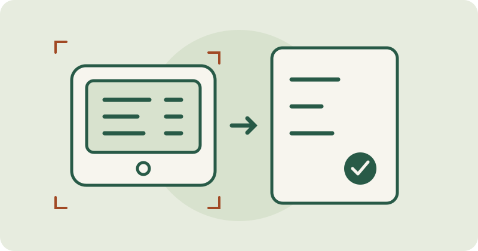

Alltagshelfer
BP Digitizer
Erfasse Blutdruckwerte, verfolge Entwicklungen und exportiere deinen Verlauf. Eine App für Android und das Web.
Ein experimentelles Werkzeug zum Lesen von Fotos von Blutdruckmessgeräten im Browser. Prüfen Sie jeden Wert selbst am Gerät.

Hearth liest systolischen Druck (SYS), diastolischen Druck (DIA) und Puls aus Fotos üblicher aufrechter, dreizeiliger Blutdruckmessgeräte. Wählen Sie ein Foto oder nutzen Sie die Kamera, schneiden Sie die Anzeige zu und korrigieren Sie das Ergebnis vor dem Kopieren.
Vergleichen Sie jeden Wert mit der Anzeige des Blutdruckmessgeräts, bevor Sie ein Ergebnis verwenden oder kopieren. Dies ist eine experimentelle OCR, kein validiertes medizinisches Lesegerät. Die Erkennungsgenauigkeit bei neuen Fotos aus der realen Welt ist noch nicht bewiesen.
Laden Sie die angehängte Release-ZIP herunter und entpacken Sie sie. Sie enthält den Quellcode, zwei ONNX-Modelle und die Browser-Laufzeitumgebung. Konto, npm-Installation und Modelltraining sind nicht erforderlich. Python 3.12 oder neuer wird empfohlen.
Führen Sie im extrahierten Ordner Folgendes aus:
python3 prototype/serve.pyVerwenden Sie einen aktuellen Browser auf demselben Computer, um die lokale Vorschau zu öffnen:
Der Server lauscht nur auf Ihrem Computer. Für den Kamerazugriff von einem anderen Gerät ist ein sicherer Browserkontext wie HTTPS erforderlich.
Ein Detektor findet die Anzeige; ein Ziffernerkenner liest ihre Zeilen. Die ONNX-Inferenz läuft in einem Browser-Worker. Konsistenzprüfungen und neue Versuche mit anderen Bildausschnitten können unsichere Ergebnisse ablehnen oder die Erkennung wiederholen. Eine korrekte Ablesung ist dadurch nicht garantiert.
Bei normaler Nutzung werden Fotos im Browserspeicher verarbeitet: Die App überträgt sie nicht an einen Server und speichert sie nicht. Nach dem ersten vollständigen Laden legt ein Service Worker App und Modelle für die Offline-Nutzung im Cache ab. Lokale Evaluierungswerkzeuge für die Entwicklung bilden einen separaten Ablauf.
Der Originalcode und die gebündelten Modelle verwenden AGPL-3.0-only. ONNX Runtime Web behält seine MIT-Bedingungen. Auf der Modellkarte werden Herkunft, Prüfsummen und Einschränkungen erläutert. Der Integrationsleitfaden dokumentiert die Wiederverwendung in einer anderen App.
Erfasse Blutdruckwerte, verfolge Entwicklungen und exportiere deinen Verlauf. Eine App für Android und das Web.

Ein kleiner Baustein, mit dem Web-Apps offline funktionieren und aktuell bleiben.

Echte Play-Store-Screenshots aus echten Android-Apps, jedes Mal auf dieselbe Weise aufgenommen.